정보처리기사(구) (2004-09-05 기출문제)
1과목: 데이터 베이스
1. 3단계 데이터베이스 구조 (3-Level Database Architecture)에서 공용의 의미보다는 어느 개인이나 특정 응용에 한정된 논리적 데이터 구조이며 데이터베이스의 개별 사용자나 응용프로그래머가 접근하는 데이터베이스를 정의한 것은?
- 관계스키마
- 개념스키마
- 외부스키마
- 내부스키마
(정답률: 53%)

2. 다음 질의어를 SQL 문장으로 바르게 나타낸 것은?
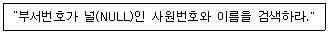
- SELECT 사원번호, 이름 FROM 직원 WHERE 부서번호 = NULL;
- SELECT 사원번호, 이름 FROM 직원 WHERE 부서번호 <> NULL;
- SELECT 사원번호, 이름 FROM 직원 WHERE 부서번호 IS NULL;
- SELECT 사원번호, 이름 FROM 직원 WHERE 부서번호 = " ";
(정답률: 69%)
3. 분산 데이터베이스 시스템에 대한 설명으로 옳지 않은 것은?
- 사용자나 응용 프로그램이 접근하려는 데이터나 사이트의 위치를 알아야 한다.
- 중앙의 컴퓨터에 장애가 발생하더라도 전체 시스템에 영향을 끼치지 않는다.
- 중앙 집중 시스템보다 구현하는데 복잡하고 처리 비용이 증가한다.
- 중앙 집중 시스템보다 시스템 확장이 용이하다.
(정답률: 63%)
4. 아래 식에 대하여 Postfix 기법으로 옳게 기술된 것은?
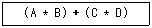
- + A B * * C D
- + * A B * C D
- A B * C D * +
- * A B + * C D
(정답률: 66%)
5. 다음 설명이 의미하는 것은?
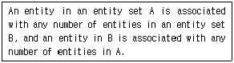
- one to one
- one to many
- many to one
- many to many
(정답률: 42%)
6. 릴레이션(relation)의 특징으로 부적합한 것은?
- 모든 튜플은 서로 다른 값을 갖는다.
- 모든 속성 값은 원자 값으로 간주할 수 없다.
- 각 속성은 릴레이션 내에서 유일한 이름을 가진다.
- 하나의 릴레이션에서 튜플의 순서는 없다.
(정답률: 79%)
7. 다음 SQL 문의 빈칸에 들어갈 내용은?
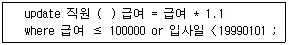
- into
- set
- from
- select
(정답률: 75%)
8. 데이터베이스 관리 시스템(DBMS)의 기본 기능에 속하는 것은?
- 정의기능, 조작기능, 제어기능
- 정의기능, 조작기능, 사전기능
- 정의기능, 제어기능, 처리기능
- 정의기능, 제어기능, 사전기능
(정답률: 86%)
9. 뷰(View)에 대한 설명 중 잘못된 것으로만 짝지어진 것은?
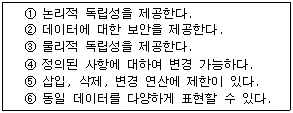
- ①, ④
- ③, ④
- ①, ②, ④
- ②, ③, ④
(정답률: 51%)
10. 다음은 Stack에 자료를 삽입(Insert)하는 알고리즘이다. 빈칸에 적합한 내용은?
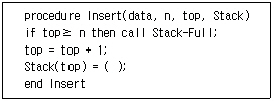
- top
- data
- top-1
- data-1
(정답률: 59%)
11. 데이터베이스의 물리적 설계 단계에서 수행되는 작업이 아닌 것은?
- 저장레코드 양식 설계
- 접근 경로 설계
- 레코드 집중의 분석 및 설계
- 트랜잭션 인터페이스 설계
(정답률: 66%)
12. 관계해석(Relational Calculus)에 대한 설명으로 잘못된 것은?
- 튜플 관계 해석과 도메인 관계 해석이 있다.
- 원하는 정보와 그 정보를 어떻게 유도하는가를 기술하는 절차적인 특성을 가진다.
- 기본적으로 관계 해석과 관계 대수는 관계 데이터베이스를 처리하는 기능과 능력 면에서 동등하다.
- 수학의 predicate calculus에 기반을 두고 있다.
(정답률: 54%)
13. 시스템 카탈로그에 대한 설명으로 옳지 않은 것은?
- 사용자가 시스템 카탈로그를 직접 갱신할 수 있다.
- 일반 질의어를 이용해 그 내용을 검색할 수 있다.
- DBMS가 스스로 생성하고 유지하는 데이터베이스 내의 특별한 테이블의 집합체이다.
- 데이터베이스 스키마에 대한 정보를 제공한다.
(정답률: 82%)
14. This sort algorithm is likely to occur to anyone who has sorted cancelled checks or playing cards by simply holding them in the hand and inserting them one by one into the proper position in the stack or hand of already sorted items. What is this sort algorithm?
- Bubble sort
- Quick sort
- Insertion sort
- Heap sort
(정답률: 55%)
15. 다음과 같이 레코드가 구성되어 있을 때, 이진 검색 방법으로 14를 찾을 경우 비교되는 횟수는?
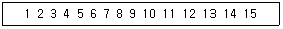
- 2번
- 3번
- 4번
- 5번
(정답률: 56%)
16. 데이터베이스 보안에 대한 설명으로 옳지 않은 것은?
- 보안을 위한 데이터 단위는 테이블 전체로부터 특정 테이블의 특정한 행과 열 위치에 있는 특정한 데이터 값에 이르기까지 다양하다.
- 각 사용자들은 일반적으로 서로 다른 객체에 대하여 다른 접근권리 또는 권한을 갖게 된다.
- SQL의 경우에는 보안 규정에 포함된 독립적인 기능으로 뷰 기법(view mechanism)과 권한인가 서브시스템(authorization subsystem)이 있다.
- 보안을 위한 사용자들의 권한부여는 관리자의 정책결정보다는 DBMS가 자체 결정하여 제공한다.
(정답률: 80%)
17. 데이터는 조직의 중요한 자산이므로 데이터를 보호하고 활용하기 위한 정책, 절차, 표준, 그리고 유사한 관리구조를 설정해야 한다. 데이터베이스 관리는 특정 데이터베이스와 그 응용의 개발, 사용의 편의 등을 제공한다. DBA(Database Administration 혹은 Database Administrator)의 세부적인 책임으로 거리가 먼 것은?
- DBMS 관리
- 데이터베이스 구조 관리
- 데이터베이스 데이터 사전 구성
- 데이터 처리 및 데이터 값 관리
(정답률: 58%)
18. 데이터베이스 생명 주기에 대한 순서가 옳은 것은?
- 요구조건 분석 → 설계 → 구현 → 운영 → 감시 및 개선
- 설계 → 요구조건 분석 → 구현 → 운영 → 감시 및 개선
- 설계 → 구현 → 요구조건 분석 → 운영 → 감시 및 개선
- 요구조건 분석 → 구현 → 설계 → 운영 → 감시 및 개선
(정답률: 86%)
19. E-R 다이어그램(diagram)의 구성요소에 대한 표현의 연결이 옳지 않은 것은?
- 개체집합 - 직사각형
- 관계집합 - 마름모꼴
- 속성 - 타원
- 링크 - 화살표
(정답률: 63%)
20. 데이터 모델의 구성요소가 아닌 것은?
- 데이터 구조 및 정적 성질을 표현하는데 사용되는 구조(Structure)
- 각 데이터 개체집합 구성요소 사이의 대응성을 나타내는 관계(Relationship)
- 데이터의 인스턴스에 적용 가능한 연산 명세와 조작 기법을 표현하는데 사용되는 연산(Operation)
- 데이터의 논리적 제한 명시와 조작의 규칙이 되는 제약 조건(Constraint)
(정답률: 46%)
2과목: 전자 계산기 구조
21. 인터럽트 처리 과정 중 하드웨어를 이용하여 우선순위를 결정하는 장치는?
- 폴링 방법
- 스택에 의한 방법
- 데이지 체인을 이용한 방법
- 장치번호 디코더에 의한 방법
(정답률: 62%)
22. 자기 디스크에서 데이터를 액세스 하는데 걸리는 시간에 포함되지 않는 것은?(문제 오류로 실제 시험 당일에는 다번이 정답으로 발표되었지만 확정답안 발표시 다, 라 번이 정답 처리 되었습니다. 여기서는 다번을 정답처리 합니다.)
- rotational delay
- seek time
- reading time
- buffer time
(정답률: 54%)
23. interrupt 체제에서 interrupt 발생시 이행해야 할 사항이 아닌 것은?
- CPU의 처리 register와 상태를 기억시키고 나중에 복귀시킨다.
- interrupt service routine의 시작 address를 발생시킨다.
- interrupt service routine이 이행될 때 다른 interrupt가 걸리지 않도록 한다.
- interrupt service routine이 완료된 후 CPU를 원상 복귀시킨다.
(정답률: 41%)
24. interrupt 발생 원인이 아닌 것은?
- 정전
- Operator의 조작
- 임의의 부프로그램에 대한 호출
- 기억공간내 허용되지 않는 곳에의 접근 시도
(정답률: 57%)
25. 프로그래머가 어셈블리 언어(Assembly language)로 프로그램을 작성할 때 반복되는 일련의 같은 연산을 효과적으로 하기 위해 필요한 것은?
- 매크로(MACRO)
- 함수(function)
- reserved instruction set
- 마이크로 프로그래밍(micro-programming)
(정답률: 81%)
26. 인터럽트를 발생하는 모든 장치들을 인터럽트의 우선순위에 따라 직렬로 연결함으로써 이루어지는 우선순위 인터럽트 처리방법은?
- handshaking
- daisy-chain
- DMA
- polling
(정답률: 66%)
27. 기억소자와 I/O 장치간의 정보교환 때 CPU의 개입 없이 직접 정보 교환이 이루어 질 수 있는 방식은?
- Strobe 방식
- 인터럽트 방식
- Handshaking 방식
- DMA 방식
(정답률: 63%)
28. 마이크로프로그램의 크기가 2,048 x 64비트, 마이크로 인스트럭션의 수가 128개일 때 Nano programming을 위한 컨트롤 스토어(control store)의 크기는?
- 2,048 x 64비트
- 2,048 x 7비트
- 2,048 x 32비트
- 128 x 64비트
(정답률: 47%)
29. 버퍼 메모리의 목적에 해당되지 않는 것은?
- 주기억 장치 용량을 크게 한다.
- 데이터를 주기억장치에서 읽어 내거나 주기억장치에 저장하기 위해 임시로 자료를 기억하는 공간이다.
- 한번 나와 있는 데이터가 CPU에서 여러 번 사용한다.
- 많은 데이터를 주기억장치에서 한 번에 가져 나간다.
(정답률: 48%)
30. 메모리의 내용으로 접근(access) 할 수 있는 메모리는?
- ROM
- RAM
- Virtual 메모리
- Associative 메모리
(정답률: 54%)
31. 중앙처리장치와 기억장치 사이에 실질적인 대역폭(bandwidth)을 늘리기 위한 방법은?
- 메모리 인터리빙
- 자기기억장치
- RAM
- 폴링방법
(정답률: 65%)
32. JK 플립플롭을 그림과 같이 연결하면 어떤 플립플롭과 같은 동작을 하는가?
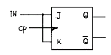
- D
- RS
- T
- Master-slave
(정답률: 63%)
33. M비트 입력단자를 통하여 들어온 2진 신호를 최대 2의 M승 개의 출력단자 중 하나를 선택하는 회로는?
- 인코더
- 디코더
- 멀티플렉서
- 디멀티플렉서
(정답률: 42%)
34. 다음 그림에 해당하는 마이크로 오퍼레이션 동작은 어떤 기능을 수행하는가?
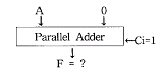
- Increment
- Decrement
- Transfer
- complement
(정답률: 38%)
35. 다음 논리 회로를 간략화하여 재설계 한 것은?
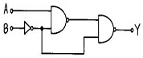
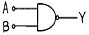
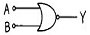
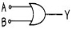
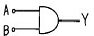
(정답률: 50%)
36. 명령어에서 실행할 동작 부분을 나타내는 연산자(op code)의 기능과 관련 없는 것은?
- 함수연산 기능
- 입ㆍ출력 기능
- 제어 기능
- 주소지정 기능
(정답률: 55%)
37. 베이스 레지스터 주소지정방식의 특징이 아닌 것은?
- 베이스 레지스터가 필요하다.
- 프로그램의 재배치가 용이하다.
- 다중 프로그래밍 기법에 많이 사용된다.
- 인스트럭션의 길이가 절대 주소지정방식보다 반드시 길어진다.
(정답률: 65%)
38. 프로그램 실행 중에 트랩(trap)이 발생하는 조건이 아닌 것은?
- overflow 또는 underflow
- O에 의한 나눗셈
- 불법적인 명령
- 패리티 오류
(정답률: 46%)
39. 다음의 마이크로 오퍼레이션(micro-operation)은 무엇을 수행하는 것인가?
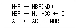
- store ACC
- load to ACC
- AND to ACC
- ADD to ACC
(정답률: 54%)
40. 주소지정 방식(Addressing Mode)중에서 프로그램 카운터 값에 명령어의 주소 부분을 더해서 실제 주소를 구하는 방식은?
- 직접 번지 방식
- 즉치 번지 방식
- 상대 번지 방식
- 레지스터 번지 방식
(정답률: 55%)
3과목: 운영체제
41. 운영체제 설계시 고려해야 할 사항이 아닌 것은?
- 사용하기 편리한 환경 제공
- 폭 넓은 이식성(portability)
- 경과 시간(turn-around time)의 증가
- 시한성(guaranted service) 보장
(정답률: 76%)
42. 분산 시스템을 설계하는 주된 이유가 아닌 것은?
- 신뢰도
- 자원 공유
- 보안의 향상
- 연산 속도 향상
(정답률: 77%)
43. 가장 바람직한 스케줄링 정책은?
- CPU 이용률을 줄이고 반환시간을 늘린다.
- 응답시간을 줄이고 CPU 이용율은 늘린다.
- 대기시간을 늘리고 반환시간을 줄인다.
- 반환시간과 처리율을 늘린다.
(정답률: 74%)
44. 운영체제의 설명으로 옳지 않은 것은?
- 운영체제는 컴퓨터 사용자와 컴퓨터 하드웨어간의 인터페이스로서 동작하는 일종의 하드웨어 장치다.
- 운영체제는 컴퓨터를 편리하게 사용하고 컴퓨터 하드웨어를 효율적으로 사용할 수 있도록 한다.
- 운영체제는 스스로 어떤 유용한 기능도 수행하지 않고 다른 응용 프로그램이 유용한 작업을 할 수 있도록 환경을 마련하여 준다.
- 운영체제는 중앙처리장치의 시간, 메모리 공간, 파일 기억 장치 등의 자원을 관리한다.
(정답률: 68%)
45. 유닉스의 i-node에 포함되는 내용이 아닌 것은?
- 파일의 사용된 횟수
- 파일 소유자의 사용자 식별
- 파일의 크기
- 파일의 링크 수
(정답률: 55%)
46. 시간 구역성(Temporal Locality)과 거리가 먼 것은?
- 집계(Totaling) 등에 사용되는 변수
- 배열 순례(Array Traversal)
- 부프로그램(Subprogram)
- 스택(Stack)
(정답률: 51%)
47. 로더(loader)의 기능이 아닌 것은?
- Allocation
- Linking
- Relocation
- Compile
(정답률: 69%)
48. UNIX에서 기존 파일 시스템에 새로운 파일 시스템을 서브디렉토리에 연결할 때 사용하는 명령은?
- mount
- mkfs
- fsck
- mknod
(정답률: 58%)
49. 다중 프로그래밍 시스템에서 운영체제에 의하여 중앙처리장치가 할당되는 프로세스를 변경하기 위해 현재 중앙처리장치를 사용하여 실행되고 있는 프로세스의 상태 정보를 저장하고, 앞으로 실행될 프로세스의 상태 정보를 설정한 다음에 중앙처리장치를 할당하여 실행이 되도록 하는 작업을 의미하는 것은?
- Context switching
- Interrupt
- Semaphore
- Dispatching
(정답률: 52%)
50. 스케줄링 기법 중 SJF 기법과 SRT 기법에 관한 설명으로 옳지 않은 것은?
- SJF는 비선점(nonpreemptive) 기법이다.
- SJF는 작업이 끝나기까지의 실행시간 추정치가 가장 작은 작업을 먼저 실행시킨다.
- SRT는 시분할 시스템에 유용하다.
- SRT에서는 한 작업이 실행을 시작하면 강제로 실행을 멈출 수 없다.
(정답률: 58%)
51. 색인 순차 파일의 인덱스에 포함되지 않는 것은?
- 오버플로우 인덱스(Overflow Index)
- 마스터 인덱스(Master Index)
- 트랙 인덱스(Track Index)
- 실린더 인덱스(Cylinder Index)
(정답률: 53%)
52. 페이지(page) 크기에 대한 설명으로 옳은 것은?
- 페이지 크기가 작을 경우 동일한 크기의 프로그램에 더 많은 수의 페이지가 필요하게 되어 주소 변환에 필요한 페이지 사상표의 공간은 더 작게 요구된다.
- 페이지 크기가 작을 경우 페이지 단편화를 감소시키고 특정한 참조 지역성만을 포함하기 때문에 기억 장치 효율은 좋을 수 있다.
- 페이지 크기가 클 경우, 페이지 단편화로 인해 많은 기억 공간을 낭비하고 페이지 사상표의 크기도 늘어난다.
- 페이지 크기가 클 경우, 디스크와 기억 장치 간에 대량의 바이트 단위로 페이지가 이동하기 때문에 디스크 접근 시간 부담이 증가되어 페이지 이동 효율이 나빠진다.
(정답률: 41%)
53. 하드웨어나 운영체제에 내장된 기능으로 프로그램의 신뢰성 있는 운영과 데이터의 무결성 보장을 위한 기능과 관련되는 보안은?
- 외부 보안
- 운용 보안
- 사용자 인터페이스 보안
- 내부 보안
(정답률: 62%)
54. 유닉스시스템에서 명령어 해석기로 사용자의 명령어를 인식하여 필요한 프로그램을 호출하고 그 명령을 수행하는 기능을 담당하는 것은?
- 유틸리티
- 쉘
- 커널
- IPC
(정답률: 73%)
55. 파일 디스크립터의 내용으로 옳지 않은 것은?
- 오류 발생시 처리 방법
- 보조기억장치의 유형
- 파일의 구조
- 접근 제어 정보
(정답률: 50%)
56. 모니터(Monitor)에 대한 설명으로 옳지 않은 것은?
- 모니터의 경계에서 상호 배제가 시행된다.
- 자료추상화와 정보 은폐 기법을 기초로 한다.
- 순차적으로 재사용 가능한 특정 공유자원 또는 공유 자원 그룹을 할당하는데 필요한 데이터 및 프로시저를 포함하는 병행성 구조이다.
- 모니터 내의 데이터는 모니터 외부에서도 액세스 할 수 있다.
(정답률: 71%)
57. 메모리 관리 기법 중 Best fit 방법을 사용할 경우 9K 정도의 프로그램 실행을 위해 어느 부분이 할당되는가?
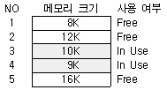
- NO. 2
- NO. 3
- NO. 4
- NO. 5
(정답률: 62%)
58. NUR 기법은 호출 비트와 변형 비트를 가진다. 다음 중 가장 나중에 교체될 페이지는?
- 호출 비트 : 0 , 변형 비트 : 0
- 호출 비트 : 0 , 변형 비트 : 1
- 호출 비트 : 1 , 변형 비트 : 0
- 호출 비트 : 1 , 변형 비트 : 1
(정답률: 54%)
59. 분산시스템의 투명성(transparency)에 관한 설명으로 옳지 않은 것은?
- 위치(location) 투명성은 하드웨어와 소프트웨어의 물리적 위치를 사용자가 알 필요가 없다.
- 이주(migration) 투명성은 자원들이 한 곳에서 다른 곳으로 이동하면 자원들의 이름도 자동으로 바꾸어진다.
- 복제(replication) 투명성은 사용자에게 통지할 필요 없이 시스템 안에 파일들과 자원들의 부가적인 복사를 자유로 할 수 있다.
- 병행(concurrency) 투명성은 다중 사용자들이 자원들을 자동으로 공유할 수 있다.
(정답률: 49%)
60. 분산 시스템에서 약 결합(loosely-coupled) 시스템의 특징이 아닌 것은?
- 프로세서 간 통신은 공유 기억 장치를 통하여 이루어진다.
- 둘 이상의 독립된 컴퓨터 시스템을 통신 링크를 이용하여 연결한 시스템이다.
- 시스템마다 독자적인 운영체제를 보유한다.
- 프로세스간의 통신은 메시지 전달이나 원격 프로시저 호출을 통하여 이루어진다.
(정답률: 41%)
4과목: 소프트웨어 공학
61. CASE가 제공하는 기능으로 거리가 먼 것은?
- 개발기간의 단축
- 개발 방법론의 생성
- 소프트웨어 품질향상
- 소프트웨어 개발 단계의 표준화
(정답률: 57%)
62. S/W Project 일정이 지연된다고 해서 Project 말기에 새로운 인원을 추가 투입하면 Project는 더욱 지연되게 된다고 주장하는 법칙은?
- Putnam의 법칙
- Mayer의 법칙
- Brooks의 법칙
- Boehm의 법칙
(정답률: 81%)
63. 위험성 추정을 위한 위험 표(risk table)에 포함될 사항이 아닌 것은?
- 위험 발생 시간
- 위험 발생 확률
- 위험의 내용 및 종류
- 위험에 따르는 영향력
(정답률: 54%)
64. 소프트웨어 유지보수 유형 중 현재 수행 중인 기능의 수정, 새로운 기능의 추가, 전반적인 기능 개선 등의 요구를 사용자로부터 받았을 때 수행되는 유형으로서, 유지보수 유형별 비용 비율 중 약 50%를 차지하는 것은?
- Preventive maintenance
- Adaptive maintenance
- Corrective maintenance
- Perfective maintenance
(정답률: 42%)
65. 소프트웨어의 품질 특성을 결정짓는 요소가 아닌 것은?
- 효율성
- 견고성
- 계측성
- 중복성
(정답률: 61%)
66. 소프트웨어 개발의 생산성에 영향을 미치는 요소가 아닌 것은?
- 프로그래머의 능력
- 팀 의사 전달
- 제품의 복잡도
- 소프트웨어 사용자의 능력
(정답률: 69%)
67. 소프트웨어 품질관리 위원회의 기본적인 목적으로 가장 바람직한 것은?
- 소프트웨어 품질 향상
- 표준화 준수여부 검증
- 도큐먼트(document)의 품질 검사
- 사용자와의 관계 향상
(정답률: 63%)
68. 객체지향 개념에서 연관된 데이터와 함수를 함께 묶어 외부와 경계를 만들고 필요한 인터페이스만을 밖으로 드러내는 과정을 무엇이라고 하는가?
- 메시지
- 캡슐화
- 상속
- 다형성
(정답률: 77%)
69. 객체지향 시스템에서 전통적 시스템의 함수(function) 또는 프로시저(procedure)에 해당하는 연산기능을 무엇이라고 하는가?
- 메소드(method)
- 메시지(message)
- 모듈(module)
- 패키지(package)
(정답률: 76%)
70. 소프트웨어 유지보수의 부작용 중 자료코드에 대한 변경이 설계문서나 사용자가 사용하는 메뉴얼에 적용되지 않을 때에 발생하는 부작용은 무엇인가?
- 코딩 부작용
- 자료 부작용
- 문서화 부작용
- 유지보수 부작용
(정답률: 52%)
71. COCOMO의 프로젝트 모드가 아닌 것은?
- organic mode
- semi-detached mode
- medium mode·
- embedded mode
(정답률: 50%)
72. HIPO(hierarchy plus input process output)에 대한 설명으로 옳지 않은 것은?
- HIPO 다이어그램에는 가시적 도표(visual table of contents), 총체적 다이어그램(overview diagram), 세부적 다이어그램(detail diagram)의 세 종류가 있다.
- 가시적 도표(visual table of contents)는 시스템에 있는 어떤 특별한 기능을 담당하는 부분의 입력, 처리, 출력에 대한 전반적인 정보를 제공한다.
- HIPO 다이어그램은 분석 및 설계 도구로서 사용된다.
- HIPO는 시스템의 설계나 시스템 문서화용으로 사용되고 있는 기법이며 기본 시스템 모델은 입력, 처리, 출력으로 구성된다.
(정답률: 43%)
73. 소프트웨어 개발 방법론에서 구현(Implementation)에 대한 설명으로 가장 적절한 것은?
- 요구사항 분석 과정 중 모아진 요구사항을 옮기는 것
- 시스템이 무슨 기능을 수행하는지에 대한 시스템의 목표기술
- 프로그래밍 또는 코딩이라고 불리며 설계 명세서가 컴퓨터가 알 수 있는 모습으로 변환되는 과정
- 시스템이나 소프트웨어 요구 사항을 정의하는 과정
(정답률: 72%)
74. 프로토타이핑 모형(Prototyping Model)에 대한 설명으로 옳지 않은 것은?
- 최종 결과물이 만들어지기 전에 의뢰자가 최종 결과물의 일부 또는 모형을 볼 수 있다.
- 개발단계에서 오류 수정이 불가하므로 유지보수 비용이 많이 발생한다.
- 프로토타입은 발주자나 개발자 모두에게 공동의 참조 모델을 제공한다.
- 프로토타입은 구현단계의 구현 골격이 될 수 있다.
(정답률: 79%)
75. 다음 내용에 가장 적합한 것은?
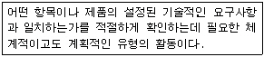
- 검열(inspections)
- 품질보증(quality assurance)
- 정적분석(static analysis)
- 기호실행(symbolic execution)
(정답률: 41%)
76. 객체지향 분석기법의 하나로 객체 모형, 동적 모형, 기능 모형의 3개 모형을 생성하는 방법은?
- Wirfs-Block Method
- Rambaugh Method
- Booch Method
- Jacobson Method
(정답률: 65%)
77. 소프트웨어 수명주기 모형 중 나선형(spiral) 모델의 처리 절차에 해당되지 않는 것은?
- 계획수립
- 고객 평가
- 위험 분석
- 시스템 유지보수
(정답률: 52%)
78. 자료흐름도에서 구성요소에 대한 기호의 표현 연결이 옳지 않은 것은?
- 자료흐름 : 화살표로 표시
- 처리공정 : 마름모로 표시
- 자료저장장소 : 직선(단선, 이중선)으로 표시
- 종착지 : 사각형으로 표시
(정답률: 42%)
79. 소프트웨어 테스트에서 화이트박스 기법의 설명에 해당하는 것은?
- 프로그램을 눈으로 보면서 확인 하는 것
- 프로그램의 구조에 의거하여 테스트 하는 것
- 프로그램의 외부사양에 대하여 테스트 하는 것
- 프로그램의 외관상 관계를 파악 하는 것
(정답률: 57%)
80. 모듈의 결합도를 높은 순서대로 옳게 표시한 것은?
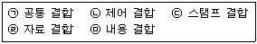
- (ㄱ) > (ㄴ) > (ㄷ) > (ㄹ) > (ㅁ)
- (ㅁ) > (ㄱ) > (ㄴ) > (ㄷ) > (ㄹ)
- (ㄴ) > (ㄷ) > (ㄹ) > (ㅁ) > (ㄱ)
- (ㄷ) > (ㄹ) > (ㅁ) > (ㄱ) > (ㄴ)
(정답률: 55%)
5과목: 데이터 통신
81. 한 개의 프레임을 전송하고, 수신측으로부터 ACK 및 NAK 신호를 수신할 때까지 정보 전송을 중지하고 기다리는 ARQ(automatic repeat request) 방식은?
- CRC 방식
- Go-back-N 방식
- stop-and-wait 방식
- selective repeat 방식
(정답률: 75%)
82. 베이직 데이터 전송제어 절차에 비하여 HDLC 전송제어 절차의 특징으로 옳지 않은 것은?
- 신뢰성 향상
- 전송효율의 향상
- 일문일답 형
- 비트투명성 확보
(정답률: 61%)
83. 패킷 교환 방식에서 트래픽 제어 기법이 아닌 것은?
- 에러 제어(error control)
- 흐름 제어(flow control)
- 혼잡 제어(congestion control)
- 교착상태 회피(deadlock avoidance)
(정답률: 29%)
84. 회선을 제어하기 위한 제어 문자 중 실제 전송할 데이터 집합의 시작임을 의미하는 통신 제어 문자는?
- SOH(Start of Header)
- STX(Start of Text)
- SYN(Synchronous Idle)
- DLE(Data Link Escape)
(정답률: 64%)
85. 단순한 정보의 수집 및 전달 기능뿐만 아니라 정보의 저장, 가공, 관리 및 검색 등과 같이 정보에 부가가치를 부여하는 통신망은?
- LAN
- WAN
- VAN
- MAN
(정답률: 68%)
86. 데이터 전송회선과 컴퓨터와의 전기적 결합과 전송문자를 조립, 분해하는 장치는?
- 신호변환장치
- 통신제어장치
- 다중화장치
- 망 제어장치
(정답률: 34%)
87. 데이터 링크 프로토콜인 HDLC(High level Data Link Control)에서 프레임의 동기를 제공하기 위해 사용되는 구성 요소는?
- 플래그(Flag)
- 제어부(Control)
- 정보부(Information)
- 프레임 검사 시퀀스(Frame Check Sequence)
(정답률: 61%)
88. 네트워크 내에서 패킷의 대기 지연(Queuing delay)이 너무 높아지게 되어 트래픽이 붕괴되지 않도록 네트워크 측면에서 패킷의 흐름을 제어하는 트래픽 제어는?
- 흐름 제어(flow control)
- 혼잡 제어(congestion control)
- 재결합 데드락(reassembly deadlock)
- 데드락 방지(deadlock avoidance) 제어
(정답률: 23%)
89. 현재 많이 사용되고 있는 LAN 방식인 10BASE-T에서 10이 가리키는 의미는?
- 데이터 전송 속도가 10Mbps
- 케이블의 굵기가 10 밀리미터
- 접속할 수 있는 단말의 수가 10대
- 배선할 수 있는 케이블의 길이가 10미터
(정답률: 71%)
90. VAN(Value Added Network)의 주요 통신 처리 기능 중 회선의 접속, 각종 제어 순서 등의 데이터 통신을 할 때 통신 순서를 변환하는 기능은?
- Mail Box 기능
- 동보통신 기능
- Format 변환 기능
- Protocol 변환 기능
(정답률: 65%)
91. 데이터링크 계층에서 수행할 전송 제어 절차의 순서가 올바르게 나열된 것은?
- 회선연결 → 데이터링크 확립 → 데이터 전송 → 데이터링크 종료 → 회선절단
- 데이터링크 확립 → 회선연결 → 데이터 전송 → 회선절단 → 데이터링크 종료
- 데이터링크 확립 → 회선연결 → 데이터 전송 → 데이터링크 종료 → 회선절단
- 회선연결 → 데이터링크 확립 → 데이터 전송→ 회선절단 → 데이터링크 종료
(정답률: 71%)
92. 메시지 교환의 특징 중 옳지 않은 것은?
- 각 메시지마다 전송 경로가 다르다.
- 데이터의 전송 지연 시간이 매우 짧다.
- 네트워크에서 속도나 코드 변환이 가능하다.
- 각 메시지마다 수신 주소를 붙여서 전송한다.
(정답률: 40%)
93. 최고 4000Hz를 포함한 신호를 PCM으로 디지털화 할 때 요구되는 초당 최소 샘플링 횟수는?(단, 나이퀴스트 표본화 이론에 근거하여 계산)
- 2,000회
- 4,000회
- 8,000회
- 16,000회
(정답률: 50%)
94. PCM(펄스 부호화 변조)의 과정에 포함되지 않는 것은?
- 다중화
- 샘플링
- 양자화
- 부호화
(정답률: 51%)
95. 다음은 인터넷의 도메인의 설명이다. 옳지 않은 것은?
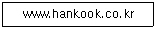
- www : 호스트 컴퓨터 이름
- hankook : 소속 기관
- co : 소속기관의 서버 이름
- kr : 소속 국가
(정답률: 43%)
96. TCP/IP의 응용 계층에 해당하는 프로토콜이 아닌 것은?
- FTP
- TCP
- SNMP
- SMTP
(정답률: 39%)
97. 디지털 데이터를 아날로그 신호로 변환하는 방법이 아닌 것은?
- ASK
- FSK
- PSK
- PCM
(정답률: 63%)
98. X.25를 설명한 것 중 옳지 않은 것은?
- 1976년에 처음 승인되었다.
- DTE와 DCE 간의 인터페이스를 규정하고 있다.
- 공중회선 교환망에 대한 ITU-T의 권고안이다.
- 물리 계층, 데이터링크 계층, 패킷 계층들에 대한 기능으로 구성된다.
(정답률: 36%)
99. 종단 사용자(end-to-end) 간의 신뢰성을 위한 계층은?
- 응용
- 표현
- 트랜스포트
- 물리
(정답률: 50%)
100. 다음 그림과 같은 전송 방식의 이름은?
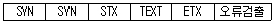
- 문자 동기방식
- 비트지향형 동기방식
- 조보식 동기방식
- 프레임 동기방식
(정답률: 62%)